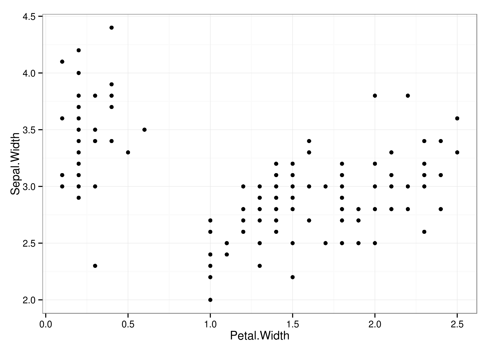
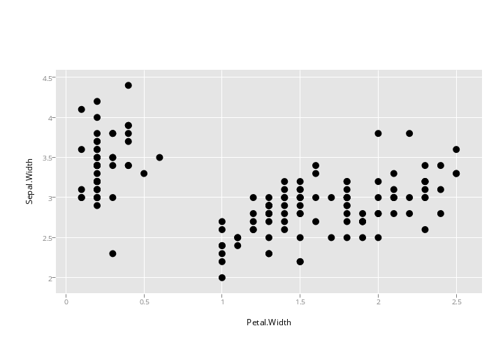

<!-- html table generated in R 3.1.2 by xtable 1.7-3 package -->
<!-- Fri Feb 27 17:16:07 2015 -->
<TABLE border=1>
  <TR> <TD> ggplot2 </TD> <TD> toby-ylim </TD> <TD> master </TD> </TR>
  <TR> <TD>  </TD> <TD>  </TD> <TD>  </TD> </TR>
   </TABLE>
